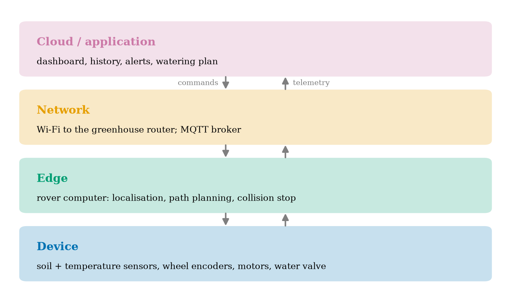
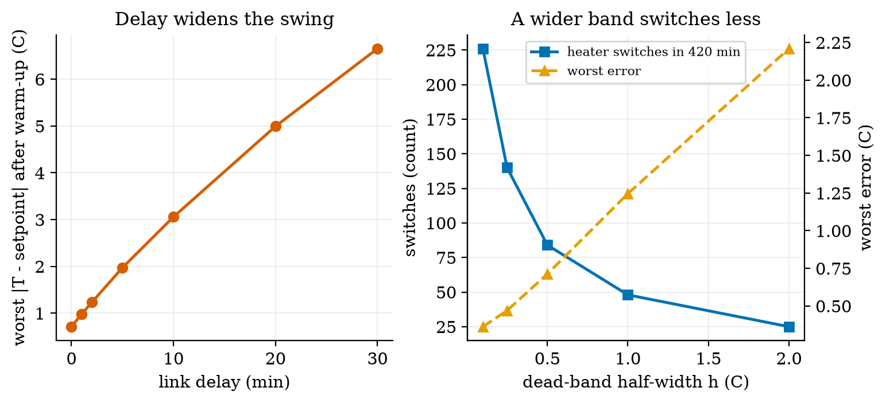
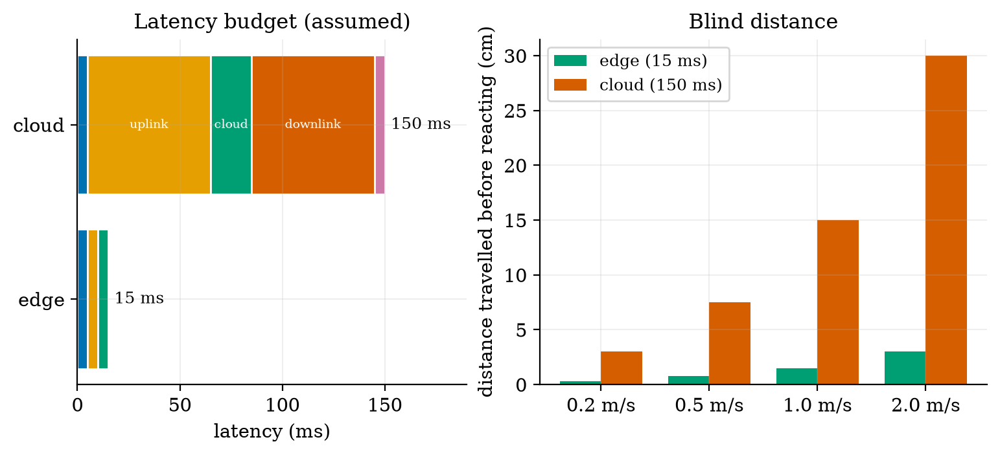
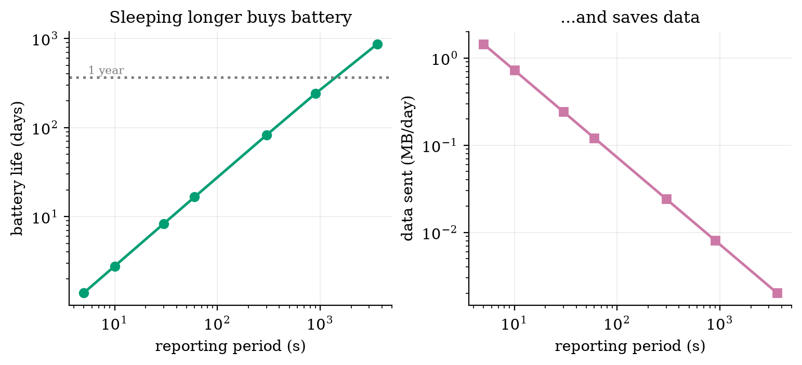

Unit 1 ready
Foundations of IoT and Robotics: Sense, Think, Act, Report
The four-layer architecture, the sense-think-act loop, and the thermostat that teaches delay, noise and sampling.
Session map
After this session you can:
- draw the four-layer IoT architecture (device, network, edge, cloud) and say which layer each part of a real system belongs to, and why;
- describe any robot or smart device as a sense-think-act loop, and name the things that spoil such a loop: noise, delay, sampling and a weak actuator;
- derive, for a heated room under on/off control, the heater duty cycle, the switching period and a bound on the worst temperature error, and check all three against a simulation;
- estimate the data a node sends per day and its battery life from a handful of numbers, and read the trade-off between reporting often and living long;
- turn a vague idea (“a robot that waters plants”) into a requirements table with numbers, and say which loops must run on the device or edge and which can go to the cloud.
- Prerequisites: Python basics; the exponential function; what a derivative is (a rate of change). Nothing else: every other term is defined in Section 1 or Section 2 before it is used. Electronics begins in Unit 2.
- Difficulty ladder used: easy → medium → medium-hard → hard (Sections 3.1 to 3.4); the hardest tier is posed as open questions in Section 3.5.
- Deliverables: this document (.tex, .pdf, .docx), 5 figures, the module
codes/foundations/sense_think_act/(a room model, an on/off controller, a sampled noisy delayed sensor loop, and two budget calculators; 7 tests), and the running-project requirements table of Section 7. - Source anchors: this Unit states course definitions and derives everything from a model that is written out in full, so it quotes no paper. The four-layer split is a teaching convention (other books use three or seven layers). The latency and battery numbers in Figures 4 and 5 are assumed round numbers for illustration, not measurements; every other number was produced by the scripts in
figures/and the module’s tests.
1. Terms: the term tree
| Term | Symbol | One-line meaning | Where it appears | New / known |
|---|---|---|---|---|
| Internet of Things (IoT) | many small devices that sense or act and talk over a network | 2 | new | |
| device (thing) | the small computer with sensors and actuators at the edge of the system | 2 | new | |
| sensor | measures a physical quantity and turns it into a number | 2 | new | |
| actuator | turns a number into a physical effect (heat, motion, flow) | 2 | new | |
| controller | the “think” part: turns measurements into commands | 2 | new | |
| robot | a machine that senses, decides and acts on the physical world by itself | 2 | new | |
| sense-think-act loop | measure, decide, act, repeat | 2 | new | |
| closed loop | the next command depends on a measurement of the result | 3.1 | new | |
| setpoint | r | the value we want the measured quantity to have | 3.2 | new |
| error | e | measurement minus setpoint in this Unit (positive means too hot) | 3.2 | new |
| bang-bang (on/off) control | the actuator is fully on or fully off, nothing between | 3.2 | new | |
| hysteresis (dead band) | h | a gap between the switch-on and switch-off thresholds that stops rapid flicker | 3.2 | new |
| time constant | \tau | the time a first-order system needs to cover 63% of the way to its target | 3.2 | new |
| first-order system | one whose rate of change is proportional to its distance from a target | 3.3 | new | |
| sampling period | T_s | time between two measurements | 3.2 | new |
| latency (delay) | d | time from a measurement being taken until the controller has it | 3.2 | new |
| noise | \sigma | random error in a measurement; \sigma is its typical size | 3.2 | new |
| duty cycle | D | fraction of the time something is on (or awake) | 3.3 | new |
| gateway / broker | the network box that collects messages and passes them on | 2 | new | |
| edge computing | doing the “think” step near the device instead of in a far data centre | 3.1 | new | |
| cloud | rented computers in a data centre, reached over the internet | 3.1 | new | |
| payload / overhead | the useful bytes in a message / the bytes added by headers | 4.1 | new | |
| requirement | a measurable statement of what the system must do or how well | 7 | new |
Terms used but not taught here: MQTT and Wi-Fi (Unit 5), voltage and current (Unit 2), PID control (Unit 9), degrees of freedom (Unit 8), Kalman filtering (Unit 10). They are named once and not relied on.
2. Remember
The Internet of Things (IoT) is a system in which many small devices, each with sensors (which measure) and actuators (which act), send data over a network to computers that store it, analyse it and sometimes send commands back. Example: a soil-moisture node in a greenhouse measures every minute, sends the number over Wi-Fi, and a dashboard in the cloud draws a graph and sends a “water now” command to a valve.
A robot is a machine that senses its surroundings, thinks (decides what to do) and acts on the physical world, all by itself, over and over. The repeating cycle is the sense-think-act loop; the part that does the thinking is the controller. A thermostat is the simplest robot; a self-driving rover is a complicated one. IoT and robotics meet because a robot that reports to, and takes orders from, a network is an IoT device that moves.
| layer | what lives there | typical hardware | what it decides |
|---|---|---|---|
| device | sensors, actuators, the small computer (microcontroller) that reads and drives them | an ESP32 board with a soil sensor and a motor driver | read this pin every second; stop the motor now |
| network | the links and the gateway (or broker) that collects and forwards messages | Wi-Fi router, a message server | which message goes to whom |
| edge | a bigger computer close to the devices | a Raspberry Pi on the rover or in the greenhouse | plan a path; combine sensors; decide quickly without the internet |
| cloud | rented servers far away | a data centre | store years of data; draw dashboards; train models |
The two words that decide where a computation runs are latency (how long a round trip takes) and bandwidth (how many bytes per second a link carries). Edge computing exists because the speed of a robot is limited by the first and the bill of a network by the second.
Memory hooks.
- Sense, think, act, report. The first three are a robot; adding “report” makes it an IoT device.
- Device = hands, network = nerves, edge = spinal cord, cloud = brain. A reflex (pull your hand from a flame) is handled in the spinal cord and does not wait for the brain; the brain remembers and plans.
- Duty cycle = the fraction of the day you are awake. A node that sleeps 99.9% of the time lives far longer than one that never sleeps, at the same awake power.
Before you read on: three predictions (answers in Section 10). Write down a guess for each, then check it against the text and figures.
- A heater with a fixed power is switched on and off to keep a room at 21 ^\circC while it is 5 ^\circC outside. In the long run, about what fraction of the time is the heater on?
- The thermostat receives each reading 5 minutes late. Does the worst temperature error stay about the same, roughly double, or grow much more?
- A battery node reports every minute and lasts about 17 days. If it reports every hour instead, does it last about 17 days \times 60, much less than that, or about 17 days \times 5?
Recall quiz (answers in Section 10).
- Name the four layers in order from the physical world to the data centre.
- What is the difference between a sensor and an actuator?
- Why does a robot’s collision-avoidance loop run on the edge rather than in the cloud?
- What does a hysteresis band do, and what does it cost?
- Which of the two, latency or bandwidth, limits how fast a robot can react?
3. Understand: the derivation
3.1 Tier 1 (easy): intuition and a picture
Think of a thermostat. A sensor reads the room temperature, a rule compares it with the number you set, and a switch turns the heater on or off. Nothing here needs the internet. Now add a Wi-Fi chip that sends the reading to a phone and accepts a new setpoint: it has become an IoT device, because the loop is the same but a network has been attached to it. Change the heater into wheels and the setpoint into “go to the dry plant”, and you have a robot. Section 7 starts building exactly that, one layer per Unit.
What makes the loop work is that it is closed: the command depends on a measurement of the result. In an open loop the controller acts without looking (turn the heater on for 20 minutes, whatever the room does). Open loops are cheap, and fail whenever anything unexpected happens, such as a door left open. Figure 1 shows a closed loop in action: the room starts at 15 ^\circC, the heater is on until the measured temperature passes the upper threshold, then off until it passes the lower threshold, and so on forever.
![Heated room under on/off control, setpoint 21 ^\circC, dead band \pm0.5 ^\circC, outside 5 ^\circC. Left (A): ideal sensor, measured every minute. The temperature stays within 0.71 ^\circC of the setpoint and the heater switches 36 times in 180 minutes. Right (B): the same loop with sensor noise (\sigma=0.3 ^\circC) and a 5-minute delay. The controller sees the red trace, not the blue one; the true temperature swings up to 2.01 ^\circC from the setpoint, and the heater switches only 13 times because each decision is based on old data.](../assets/fig/u1/fig01_loop.png)
Read the figure from the bottom panels upwards: the heater trace (bottom) is the action, the red trace is the sense, and the rule that connects them is the think. In B the red trace is not just noisy; it is also late, so the controller turns the heater off after the room has already overshot. Noise and delay are the two enemies of every sense-think-act loop. The third, sampling (the loop looks only every T_s minutes), is already present in A: the true temperature leaves the \pm0.5 band, to a worst case of 0.71 ^\circC, because between two looks the room keeps heating.
Where should the “think” step live? Figure 2 maps the running project onto the four layers. Fast loops that move things live low (device, edge); slow, data-heavy jobs live high.

3.2 Tier 2 (medium): the definitions made precise
3.2.1 The plant, the setpoint and the error
The thing being controlled (here the room) is called the plant. The quantity we care about is its output y(t) (the temperature), the value we want is the setpoint r, and the error is e(t)=y(t)-r. \tag{1} (Many books define e=r-y; the sign convention does not matter as long as it is used consistently. This course uses e=y-r in Unit 1 so that “positive error” means “too hot”, and switches to the control convention e=r-y in Unit 9, where it will be flagged again.) The controller’s job is to keep e near zero.
3.2.2 Bang-bang control with hysteresis
The simplest controller has two outputs: heater off (u=0) or on (u=1). A plain rule “on if y<r, off otherwise” would switch many times per second as the measurement jitters around r. The standard fix is hysteresis: choose a half-width h and use two thresholds, u\leftarrow\begin{cases}1 & y_{\text{seen}}<r-h\\ 0 & y_{\text{seen}}>r+h\\ \text{unchanged} & \text{otherwise.}\end{cases} \tag{2} The band from r-h to r+h is the dead band. The controller has memory: inside the band it keeps doing what it did last. The module’s class BangBang is exactly this rule, a few lines long. Here y_{\text{seen}} is what the controller has received, which is not y(t): the sensor measures only every sampling period T_s, adds noise (random error of typical size \sigma), and the value arrives after a latency d. In the module, simulate(..., sample_period=Ts, delay=d, sigma=sigma) creates exactly this chain.
3.2.3 The room model
For the plant we use Newton’s law of cooling plus a heater: \frac{dT}{dt}=-\frac{T-T_{\text{out}}}{\tau}+k\,u. \tag{3} T is the room temperature (^\circC), T_{\text{out}} the outside temperature, u\in\{0,1\} the heater state, \tau the time constant (minutes) and k the heating rate (^\circC per minute when u=1). The first term says the room leaks heat to the outside at a rate proportional to the temperature difference; the second says the heater adds heat at a fixed rate. In this Unit T_{\text{out}}=5 ^\circC, \tau=60 min and k=0.5 ^\circC/min. These are round numbers chosen for clean arithmetic, not a measured house.
3.3 Tier 3 (medium-hard): the main derivations
3.3.1 Solving the room: the first-order response
Equation (3) is a first-order system: its rate of change is proportional to the distance from a target. Hold u constant and write T_\infty=T_{\text{out}}+k\tau u, the temperature the room would finally reach. Then \frac{dT}{dt}=-\frac{T-T_\infty}{\tau}, because -\frac{T-T_{\text{out}}}{\tau}+ku=-\frac{T-T_{\text{out}}-k\tau u}{\tau}. Substitute x=T-T_\infty (a constant offset, so \dot x=\dot T): \begin{aligned} \frac{dx}{dt}&=-\frac{x}{\tau} &&\text{(the rule above)}\\ \frac{dx}{x}&=-\frac{dt}{\tau} &&\text{(separate the variables)}\\ \ln x(t)-\ln x(0)&=-\frac{t}{\tau} &&\text{(integrate both sides)}\\ x(t)&=x(0)\,e^{-t/\tau} &&\text{(exponentiate)}\\ T(t)&=T_\infty+\big(T(0)-T_\infty\big)e^{-t/\tau}. &&\text{(undo the substitution)} \end{aligned} \tag{4} Three facts follow, and the module’s tests check each one. (i) After one time constant, t=\tau, the gap to the target has shrunk to e^{-1}=0.368 of its start: the room has covered 63.2% of the way. The test cools a 25 ^\circC room outside at 5 ^\circC for 60 minutes and finds 5+20e^{-1}=12.36 ^\circC to 10^{-9}. (ii) With the heater on forever, the room approaches T_\infty=5+0.5\times60=35 ^\circC; with it off, 5 ^\circC. (iii) Because the formula is exact for constant u, the simulator advances in steps of any size without numerical error; the only approximation in the whole simulation is that u changes at the discrete times at which the controller looks.
3.3.2 The heater duty cycle
In steady operation the temperature just oscillates around the setpoint, so its average rate of change is zero. Average equation (3) over many cycles with T\approx r and let D be the fraction of time the heater is on: \begin{aligned} 0&=-\frac{r-T_{\text{out}}}{\tau}+kD &&\text{(average of }dT/dt\text{ is zero)}\\ D&=\frac{r-T_{\text{out}}}{k\,\tau}. &&\text{(solve for }D) \end{aligned} \tag{5} With the Unit’s numbers D=(21-5)/(0.5\times60)=16/30=0.5333. The simulator, run with a very fine sampling step so that it behaves like a continuous loop, gives a duty cycle of 0.5335. In Figure 1A, with one reading per minute, it gives 0.533; in B, with noise and delay, 0.539. The duty cycle is a property of the room and the setpoint, not of the controller details: whatever the dead band, the heater must supply the heat that leaks out. Prediction 1 of Section 2 is answered: about 53%.
Feasibility. Equation (5) has a message: D\le1 is required, i.e. r-T_{\text{out}}\le k\tau, or T_\infty\ge r. If the outside is at -15 ^\circC the formula gives D=36/30=1.2: impossible, because the heater can lift the room to at most T_{\text{out}}+k\tau=15 ^\circC. The actuator must be strong enough for the job, a point that returns for motors in Unit 2.
3.3.3 The switching period
Inside the dead band the heating and cooling speeds are found by evaluating (3) at T=r. Heating (u=1): s_{\text{on}}=-\frac{r-T_{\text{out}}}{\tau}+k=-0.2667+0.5=0.2333 ^\circC/min. Cooling (u=0): s_{\text{off}}=\frac{r-T_{\text{out}}}{\tau}=0.2667 ^\circC/min (as a magnitude). If a reading arrived at every instant, one cycle would cross the whole band of width 2h upward and then downward: P=\frac{2h}{s_{\text{on}}}+\frac{2h}{s_{\text{off}}}=\frac{1.0}{0.2333}+\frac{1.0}{0.2667}=4.286+3.750=8.04\ \text{min}. \tag{6} The fine-step simulation gives a period of 8.06 minutes, and solving equation (4) exactly for each crossing (t_{\text{on}}=\tau\ln\frac{35-20.5}{35-21.5}=4.288 min, t_{\text{off}}=\tau\ln\frac{21.5-5}{20.5-5}=3.751 min) gives 8.039 minutes and a duty cycle of 0.5334, which agrees with equation (5) to three decimals. (The slope formula and the exact crossing differ slightly because the slopes change as the temperature moves across the band; we evaluated them at the setpoint.) With one reading per minute the period grows to 10.0 minutes, which is why Figure 1A has 36 switches in 180 minutes rather than 2\times180/8.04=45: sampling slows the loop down and widens its swing.
3.3.4 How wrong can the temperature get?
The controller notices that a threshold has been crossed only when the next reading arrives. After the temperature crosses r+h it can keep rising for at most one sampling period T_s (until the next reading) plus the latency d (until that reading reaches the controller) before the heater is switched off, and in that time it changes by at most the maximum slope. The same holds on the way down. Therefore \max|e|\;\le\;h+s_{\max}\,(T_s+d),\qquad s_{\max}=\max(s_{\text{on}},s_{\text{off}})=0.2667\ ^\circ\mathrm{C/min}. \tag{7} This is an upper bound, not an equality, because a reading may arrive just after the crossing (a short wait) and because the slopes shrink as the temperature moves away from the setpoint. It still tells us the structure of the error: a fixed part h chosen by design, and a part proportional to the age of the information T_s+d. Table 1 checks it against the simulator; the bound holds in every row.
| delay d (min) | measured worst \lvert e\rvert (^\circC) | bound (7) (^\circC) |
|---|---|---|
| 0 | 0.712 | 0.767 |
| 1 | 0.979 | 1.033 |
| 2 | 1.232 | 1.300 |
| 5 | 1.973 | 2.100 |
| 10 | 3.057 | 3.433 |
| 20 | 4.993 | 6.100 |
| 30 | 6.653 | 8.767 |
3.4 Tier 4 (hard): generalisation, edge cases, what the textbooks gloss over
3.4.1 Choosing the dead band: noise against flicker
A wide dead band means few switches (good for a mechanical relay with a limited number of operations, and for a battery) but a larger error. Figure 3 (right) measures this: with h from 0.1 to 2.0 ^\circC, the heater switches 226, 140, 84, 48 and 25 times in 420 minutes, while the worst error rises from 0.36 to 2.21 ^\circC. A 20-fold wider band cuts the switching 9-fold and raises the worst error 6-fold (equation (7): the error is h plus a fixed staleness term), so there is no free lunch: you buy fewer switches with accuracy.

Noise forces the same choice from the other side. With the band fixed at h=0.5 ^\circC, increasing the sensor noise from \sigma=0 to 0.1, 0.3 and 0.6 ^\circC changes the number of switches from 84 to 84, 93 and 133 (one seed; 480 minutes). Small noise is hidden inside the band; noise comparable to h makes the controller flicker near the thresholds. A practical rule that follows from this and is checked here only in this one setting: make h clearly larger than a few \sigma, or filter the measurement first (Unit 3).
3.4.2 Where the “think” step runs: a latency budget
A round trip to the cloud is a chain of stages, and each adds latency. Figure 4 compares an edge loop with a cloud loop for a rover. The stage times are assumed round numbers: 5 ms to read a sensor, 5 ms to decide on the rover, 5 ms to drive the motor (edge total 15 ms); the cloud route replaces the decision by a 60 ms uplink, a 20 ms cloud decision and a 60 ms downlink (total 150 ms). During that time the rover keeps moving at speed v and travels v\times latency blind.

The ratio is simply 150/15=10 at every speed, so the gap grows with speed. This is the real reason for edge computing in robots, and it reappears in Unit 6 as a design rule.
3.4.3 Reporting rate, energy and data volume
A node that is awake for t_{\text{act}} seconds per report at current I_{\text{act}} and asleep the rest of the period P at current I_{\text{slp}} draws the average current \bar I=\frac{I_{\text{act}}t_{\text{act}}+I_{\text{slp}}\,(P-t_{\text{act}})}{P}, \tag{8} a weighted average with weights equal to the time fractions. Its battery life in days is \text{life}=\dfrac{C\,\eta}{24\,\bar I} for capacity C (mAh) and usable fraction \eta (the module uses \eta=0.8). The data sent per day is (\text{payload}+\text{overhead})\times86400/P bytes. The data figures need no assumptions beyond the byte counts; the current figures use assumed values (120 mA awake for 2 s per report, 0.01 mA asleep, 2000 mAh, \eta=0.8).

Prediction 3 is answered by Figure 5: going from one report per minute to one per hour does not give 60 times the life but 869.6/16.6\approx52 times. At long periods the sleep current starts to matter (at 3600 s the average current is 0.077 mA, of which the sleep current alone is 0.01 mA), so the gain flattens. The fixed cost per report (2 s awake) dominates until the period is long, a point Unit 4 attacks with deep sleep.
3.5 Tier 5 (hardest): open questions
- Who owns the emergency stop? A cloud-side safety check can see the whole fleet; a device-side check is fast. Can a design give a guarantee that holds when the network is down, and what must the device do when it loses the link: stop, continue, or return home? Argue each case for a greenhouse rover and for a delivery robot on a pavement.
- Is T_s+d the right measure of staleness? Equation (7) treats age as the only thing that matters. What changes when the information is old but the system is slow (the room has \tau=60 min, so a 1-second delay is irrelevant) versus old and the system is fast (a motor with \tau=50 ms)? Express the condition as a ratio.
- When does adding a network make a system worse? Name one case where a local closed loop was perfectly adequate and the IoT version added only cost, delay and attack surface (Unit 7).
4. Apply
4.1 Worked problems
Problem 1 (duty cycle and feasibility). A greenhouse is kept at 22 ^\circC. The heater supplies k=0.4 ^\circC/min and the time constant is \tau=75 min. (a) What duty cycle is needed on a night at 4 ^\circC? (b) What is the coldest night the heater can handle?
Solution. (a) D=\dfrac{22-4}{0.4\times75}=\dfrac{18}{30}=0.60. (b) Need D\le1: 22-T_{\text{out}}\le0.4\times75=30, so T_{\text{out}}\ge-8 ^\circC. Below -8 ^\circC the heater is too weak at any controller setting.
Problem 2 (data volume). A node sends a 24-byte payload plus 60 bytes of headers every 60 s. How much data per day does one node send, and 200 nodes?
Solution. 84\ \text{B}\times1440=120{,}960 B =0.121 MB per node per day, so 200 nodes send 24.2 MB per day. (The figure script prints 0.121 MB/day for the 60 s row.)
Problem 3 (battery life). Use the assumed node of Section 3.4.3 at a 60 s reporting period. Find the average current and the battery life.
Solution. \bar I=\dfrac{120\times2+0.01\times58}{60}=\dfrac{240.58}{60}=4.0097 mA. Life =\dfrac{2000\times0.8}{24\times4.0097}=16.63 days, matching Figure 5 (16.6 days).
Problem 4 (blind distance). A rover moves at 0.5 m/s. How far does it travel during a 150 ms cloud round trip, and during a 15 ms edge loop?
Solution. 0.5\times0.150=0.075 m =7.5 cm and 0.5\times0.015=0.0075 m =0.75 cm, as in Figure 4.
4.2 Code and figures
The core of the module is the closed loop of simulate: every step, take a reading if one is due, deliver any reading whose delay has elapsed, let the controller decide, then advance the room. Using it takes a few lines:
import sense_think_act as S
room = S.Room(T0=15.0, T_out=5.0, tau=60.0, k=0.5)
ctrl = S.BangBang(setpoint=21.0, h=0.5)
res = S.simulate(ctrl, room, t_end=240, sample_period=1.0, delay=5.0, sigma=0.3)
print(S.metrics(res, setpoint=21.0)) # mean/max error, duty cycle, switch count
print(S.battery_life_days(2000, 4.0097)) # 16.6 daysThe full code, with its README, is in codes/foundations/sense_think_act/; its seven tests check the exact exponential solution, the equilibrium T_\infty=35 ^\circC, the hysteresis memory, that the ideal loop stays inside the band, that delay widens the swing, determinism of the seeded noise, and the two calculators. All figures of this Unit were produced by the scripts fig01_loop.py to fig05_latency.py and the theory check analysis_theory.py in figures/. (The figure files are numbered in the order they were made; the figures in this document are numbered in the order they appear.)
What would look different if the theory were wrong? If equation (5) were wrong, the heater duty in the ideal simulation would differ from 16/30; it is 0.5335. If the bound (7) were wrong, some row of Table 1 would show a measured error above the bound; none does.
5. Analyze
Limits. As T_s\to0 and d\to0, equation (7) gives \max|e|\to h, and equation (6) gives the continuous-time period. As h\to0 the number of switches grows without bound (226 switches already at h=0.1 ^\circC): a perfect on/off controller with perfect sensing would chatter infinitely fast. Real relays and heaters are damaged by this, which is why the dead band exists at all.
Dominance. For short delays the error is dominated by the design band h; for delays much larger than h/s_{\max}=0.5/0.267\approx1.9 min the error is dominated by staleness s_{\max}(T_s+d). In Table 1 the crossover is visible at delay 2 min: the staleness term (0.2667\times3=0.8 ^\circC) already exceeds h (0.5 ^\circC).
Order-of-magnitude estimate. Before running anything, one can estimate the period: crossing a band of 1 ^\circC at about 0.25 ^\circC/min takes about 4 minutes each way, so about 8 minutes: the simulation gives 8.06.
Sensitivity. The duty cycle depends on three numbers only (r-T_{\text{out}}, k, \tau). Dropping the outside temperature from 5 to -5 ^\circC raises D from 0.533 to 0.867; the heater works 63% harder. This is why heating bills move so much with the weather.
Failure modes. (1) Actuator too weak (D>1): no controller can fix it. (2) Stale data (T_s+d large against the system’s time scale): the loop overshoots. (3) Noise comparable to h: flicker. (4) Lost network: if the loop depends on a link and the link fails, the actuator keeps its last command; the heater might stay on. A safe design needs a timeout that drives the actuator to a safe state.
Items used from the pedagogy checklist: limits, dominance, estimate, sensitivity, failure modes, invariants (the exact solution of equation (4) is a test), and constructed-versus-measured (the budget numbers are constructed from assumptions; the loop numbers are from the model).
6. Evaluate
Alternatives to on/off control. An on/off controller needs no model and no tuning, which is why it runs in every kettle and fridge. Its cost is a permanent ripple, which Figure 1 makes visible. A proportional controller varies the heater power with the error and gives a smaller ripple; this is Unit 9. Choose on/off when the actuator is a relay or valve that can only be on or off, the ripple is acceptable and the cost matters.
Alternatives to the cloud. Table 2 compares where to put the “think” step, for the greenhouse rover.
| decision | needs low latency? | needs lots of data? | best layer |
|---|---|---|---|
| stop before hitting a pot | yes (ms) | no | device or edge |
| follow the planned path | yes (10 to 100 ms) | no | edge |
| decide which plants to water today | no (minutes) | some | edge or cloud |
| draw a month of soil-moisture trends | no | yes | cloud |
| update the watering model from a season of data | no | very much | cloud |
Context. The idea behind the “Internet of Things” is older than the name: the thermostat, the factory controller and the remote-monitoring system were all sensor-network-controller systems long before. What changed is cost: a Wi-Fi microcontroller board is now cheap enough that adding a network link to almost anything is a design option. The ethical consequences follow from that same fact: a device that is cheap to connect is cheap to leave insecure (Unit 7), and a sensor in a home or a field is a source of personal or commercial data. A robot adds physical risk: it can hurt someone, so safety must be designed in (a stop that works when software fails), not added later.
When NOT to use IoT. When a local loop is enough, when failure of the link would be dangerous, when the data are sensitive and the benefit of sharing them is small, or when the device cannot be updated for years (an unpatched connected device is a liability).
Honesty about this Unit’s numbers. The loop numbers come from a simple one-room model with round-number parameters. The battery and latency numbers use assumed values and show shapes (how things scale with the period or the speed), not predictions for any real board. Unit 2 replaces the assumed currents by a power budget built from component numbers.
7. Create
- Make the room colder, then find the limit. Change
Room(T_out=-5)and find by simulation when the heater duty reaches 1. Compare with equation (5). - A requirements table for the Smart Greenhouse Rover (the running project; read the table below now, revise it in later Units).
- Add a timeout. Extend
simulateso that if no reading arrives for 10 minutes the heater is switched off (a safe state), and measure the temperature when the link drops for 30 minutes. - Combine with the next Unit. Pick the node’s battery and radio from the power numbers of Unit 2 and replace the assumed currents in
fig03_budget.py. - Could become a package module:
iotrobotics.loopswithRoom,BangBang,simulate,metrics, reused by Units 3, 6 and 9.
Running project, Layer 0: requirements for the Smart Greenhouse Rover. A small differential-drive robot patrols a greenhouse, measures soil moisture and air temperature, reports to a dashboard and drives to plants that need water. The numbers are targets to be checked by the simulations of later Units, not facts.
| id | requirement | target | checked in |
|---|---|---|---|
| R1 | soil moisture and temperature reported per zone | every 60 s | Unit 5 |
| R2 | telemetry latency to the dashboard | under 2 s | Unit 12 |
| R3 | rover stops before an obstacle | blind distance under 5 cm at 0.5 m/s, i.e. loop under 100 ms | Unit 11 |
| R4 | node battery life (fixed soil node) | at least 30 days | Unit 2 |
| R5 | position error after a 20 m patrol | under 10% of distance, then corrected | Unit 8, Unit 10 |
| R6 | plants watered when dry | at least 90% of requests succeed | Unit 12 |
| R7 | only authorised commands move the rover | all commands authenticated | Unit 7 |
| S1 | rover stops when the link is lost for more than 5 s | safe state in 5 s | Unit 7 |
8. Visualization lesson
| Chart type | Best for | How it misleads | matplotlib call |
|---|---|---|---|
| line over time (time series) | a quantity changing with time; here T(t) | a y-axis that does not start at zero exaggerates swings; two series on different scales invite false correlation | ax.plot(t, y) |
| step plot | a signal that is constant between changes (the heater state) | a normal line would draw false slopes between on and off | ax.step(t, u, where="post") |
| shaded band | a tolerance or acceptable region (the dead band) | an unlabelled band is read as data | ax.axhspan(lo, hi, alpha=0.25) |
| dual-axis (twin) plot | two quantities with different units against one variable | the visual crossing point is an artefact of the chosen scales; use sparingly and label both axes | b2 = ax.twinx() |
| log-log line | quantities spanning orders of magnitude (period 5 s to 1 hour) | straight lines mean power laws only if both axes are log; the eye underestimates differences at the high end | ax.loglog(x, y) |
| stacked horizontal bar | a total made of stages (latency budget) | only the first segment is easy to compare across bars | ax.barh(y, w, left=cum) |
| layer diagram | structure, not data | decoration without information | FancyBboxPatch, ax.annotate |
Reading Figure 1 as a chart. Panels share the x-axis (sharex=True) so that the heater switch times line up with the temperature turning points; this is the main design decision. Reading Figure 4 (right). The bars start at zero (they must, since length encodes value). The two series use the same units, so grouped bars are fair; the ratio of 10 can be seen in every group.
9. Problem set
- (easy) A room is kept at 20 ^\circC, outside is 10 ^\circC, k=0.5 ^\circC/min, \tau=60 min. What heater duty cycle is needed?
- (medium) A node sends a 30-byte payload with 50 bytes of overhead every 20 s. Find bytes per day, and the battery life if it draws 15 mA on average from a 3000 mAh battery with 80% usable.
- (medium-hard) For the room of Unit 1 (h=0.5, T_s=1 min), use equation (7) to find the largest link delay for which the worst error stays under 2.5 ^\circC. Then run
simulatewith that delay and check whether the measured error is below 2.5. Is the bound conservative? - (hard) Derive the duty cycle of equation (5) a second way: compute the exact on-time and off-time for crossing the band with the exponential solution (4) (use T_\infty for each state), and compare t_{\text{on}}/(t_{\text{on}}+t_{\text{off}}) with 16/30 for h=0.5.
- (hardest) Modify
simulateso that the controller receives readings over a lossy link that drops each reading with probability p. Measure the worst error for p=0,\,0.2,\,0.5,\,0.8. Explain the result using T_s+d, and propose a safe rule for long silences.
10. Retrieval practice and recap
Answers to the Section 2 predictions.
- About 53% (16/30=0.533; simulation 0.533 to 0.539).
- It grows much more than double: from 0.71 to 1.97 ^\circC, nearly three times.
- Neither of the first two: it lasts about 52 times longer (16.6 to 869.6 days), not 60, because the sleep current starts to matter.
Answers to the Section 2 recall quiz.
- Device, network, edge, cloud.
- A sensor turns a physical quantity into a number; an actuator turns a number into a physical effect.
- Because a cloud round trip (assumed 150 ms) lets a moving rover travel 7.5 cm at 0.5 m/s before it reacts, ten times more than an edge loop (15 ms).
- It stops the controller from flickering around the threshold; it costs a larger error (about h plus the staleness term).
- Latency (bandwidth limits cost and bulk data, not reaction time).
Explain it to a friend.
- Why does a thermostat need a gap between its “on” and “off” temperatures?
- Why does a robot not ask the cloud before braking?
- Why does reporting every hour instead of every minute not give exactly 60 times the battery life?
Re-derive by hand tomorrow, without looking: (a) the solution of \dot T=-(T-T_\infty)/\tau; (b) the duty cycle D=(r-T_{\text{out}})/(k\tau); (c) the average-current formula and the battery life of a duty-cycled node.
11. Where next
- Unit 2 gives the missing electronics: what a volt, an amp and a battery really are, how to size a resistor, how to drive a motor, and how to build the power budget that Figure 5 only assumed.
- Terms named here but not taught: voltage and current (Unit 2), MQTT and Wi-Fi (Unit 5), PID (Unit 9), degrees of freedom (Unit 8). They are registered in CURRICULUM.md.
- Open threads: the loop numbers use a one-room model with round numbers (no real house measured); the battery and latency values are assumed; the “lossy link” experiment of Exercise 5 is left to the learner.